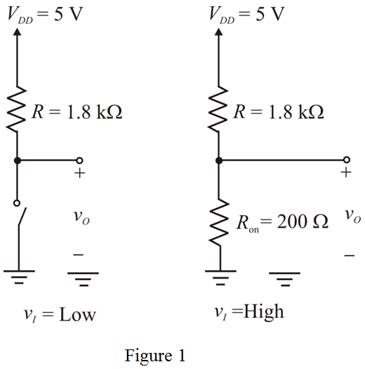

Step 1:
Refer to Figure 13.7 (a) for a simplest implementation of a logic inverter using voltage-controlled switch in the text book.
Draw the equivalent circuit when is low and high respectively.

Step 2:
Maximum value of input interpreted by the inverter as logic 0 is ,
Minimum value of input interpreted by the inverter as logic 1 is .
(a)
Determine the value of low-level output voltage.
Substitute  for
for  ,
,  for
for  and
and  for
for  in the equation.
in the equation.
Thus, the value of low-level output voltage,  is
is  .
.
Step 3:
Determine the value of High-level output voltage.
Substitute  for
for  in the equation.
in the equation.
Thus, the value of high-level output voltage,  is
is  .
.
Step 4:
Determine the value of noise margin for low input.
Substitute  for
for  and
and  for
for  in the equation.
in the equation.
Thus, the value of noise margin for low input,  is .
is .
Step 5:
Determine the value of noise margin for high input.
Substitute for  and
and  for
for  in the equation.
in the equation.
Thus, the value of noise margin for high input,  is
is  .
.
Step 6:
(b)
Determine the resultant value of high-level output voltage.
Here,  is number of driving identical inverters nothing but fan-out inverters.
is number of driving identical inverters nothing but fan-out inverters.
Substitute  for
for  , for
, for  and for
and for  in the equation.
in the equation.

Thus, the resultant value of high-level output voltage,  is.
is.
Step 7:
Determine the noise margin at high level.
Thus, the resultant value of high-level niose margin,  is.
is.
Determine the maximum number of fan-out inverters while the inverter is still providing an value is equals to its .
Substitute  for
for  , for
, for  and for
and for  in the equation.
in the equation.
Thus, the maximum number of fan-out inverters, is .
Step 8:
(c)
(i)
Determine the value of static power dissipation in the inverter during the low output state.
Substitute  for
for  ,
,  for
for  and for
and for  in the equation.
in the equation.
Thus, the value of static power dissipation in the inverter during the low output state, is.
Step 9:
(ii)
Determine the static power dissipation in the inverter during the high output state.
Substitute  for
for  , for and
, for and  for
for  in the equation.
in the equation.
Thus, the value of static power dissipation in the inverter during the high output state, is .